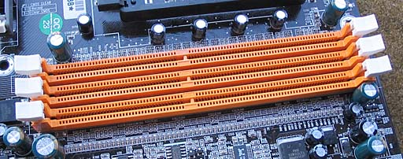
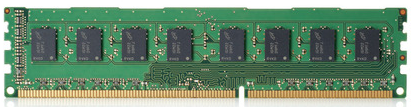
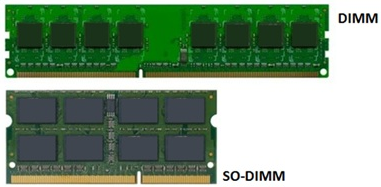
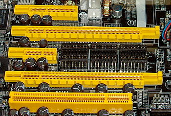

Sommige bouwers van industriële computers ontwerpen en produceren hun eigen moederborden. Een voorbeeld hiervan is Beckhoff. Het ontwerp en de productie van hun moederborden gebeurt in Duitsland. Zij doen dit om volledige controle te houden over de kwaliteit maar ook over de voorraad en beschikbaarheid.
Een klant die een machine heeft, aangestuurd door een industriële computer, wil bij een defect aan het moederbord of de computer in het algemeen nog steeds die machine kunnen gebruiken. Een machine gaat doorgaans langer mee dan een computer en sommige machines doen er ook jaren over om terug verdiend te worden.
Als je kijkt naar de evoluties op het gebied van hardware dan kan je onderdelen die vijf jaar geleden courant waren vandaag de dag niet meer krijgen. We denken hierbij aan moederborden, RAM geheugen en processoren. Bouwers van industriële computers garanderen dat je bij aankoop tot 10 jaar na datum nog vervangonderdelen zal kunnen krijgen. Je zal in een industriële computer dan ook niet de laatste technologie terugvinden maar wel technologie die zijn betrouwbaarheid reeds heeft bewezen.
Hierna bespreken we kort hoe de processor, het werkgeheugen en de grafische kaart aangesloten worden op een moederbord.
Een processor wordt geplaatst op het moederbord door middel van een socket.
Momenteel zijn er twee grote spelers in de computerprocessor markt: Intel en AMD.
Er zijn geen merk overschrijdende standaarden waardoor een moederbord moet gemaakt worden voor een bepaald merk. Ook binnen het merk zelf kan één bepaald type processor maar geplaatst worden op één bepaald type socket.
Dat komt omdat ieder type processor zoals Core 3, 5, 7, 9, Ryzen... over andere eigenschappen beschikt en een andere interne werking heeft.
De keuze van het moederbord bepaalt dus ook het merk en het type processor dat je moet kiezen.
Op industriële moederborden die gemaakt zijn voor de x64 instructieset ga je meestal Intel processoren terugvinden.
Dual In-line Memory Module slots zijn moderne versies van het verouderde single in-line memory module (SIMM) systeem. Ze heten Duals omdat ze in tegenstelling tot SIMM's aan beide kanten van het printplaatje aansluitpunten hebben.

In deze DIMM slots worden RAM modules geplaatst zoals je in onderstaande figuur kan zien. In een computerwinkel koop je die onder de noemer DDR3, DDR4 of DDR5. DDR staat hierbij voor Double Data Rate. Over de werking van DDR leer je meer in het hoofdstuk Random Access Memory. Belangrijk om op te merken is dat DDR4 geheugen niet in een DDR5 DIMM slot past en omgekeerd.

In een moderne industriële computer wordt vaak minstens 8 GB DDR4 werkgeheugen voorzien. Populaire fabrikanten van werkgeheugen zijn Crucial, Corsair, Kingston en Samsung.
Naast DIMM bestaat er ook de SO-DIMM variant. Deze staat voor Small Outline Dual In-line Memory Module. Het is een kleiner alternatief voor de normale DIMM en heeft ongeveer de helft van de afmeting van een gewone DIMM. Dit type geheugen wordt voornamelijk gebruikt in apparaten waar kleine afmetingen belangrijk zijn, zoals laptops of Panel PCs.

In een recente processor wordt er reeds meteen ook een ingebakken grafische processor voorzien. Zie ook de sectie Accelerated Processing Unit in het hoofdstuk Chipset. Deze is enkel geschikt voor basistaken zoals tekstverwerking of surfen op het Internet.
Speel je vaak games of doe je aan CAD / CAE dan heb je een uit de kluiten gewassen grafische kaart nodig. Fabrikanten zijn NVIDIA met de GeForce serie en AMD met de Radeon serie.
Voor een industriële computer is de ingebouwde grafische kaart meestal meer dan voldoende.
Vroeger werden grafische kaarten aangesloten via de AGP of Accelerated Graphics Port. Vandaag de dag wordt dit gedaan via PCIe of PCI Express wat op zijn beurt de opvolger is van PCI of Peripheral Component Interconnect.
In onderstaande afbeelding zie je een stukje van een moederbord met daarin duidelijk de PCI Express sloten en onderaan nog een ouder PCI slot.
